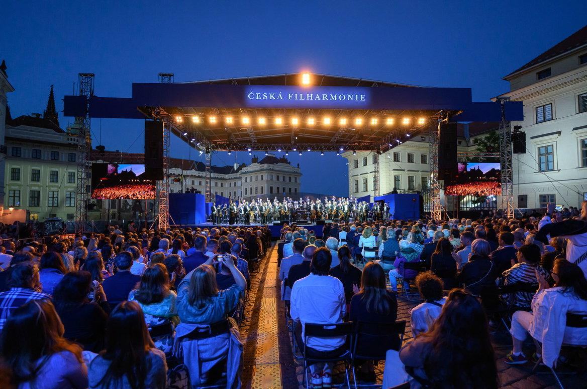
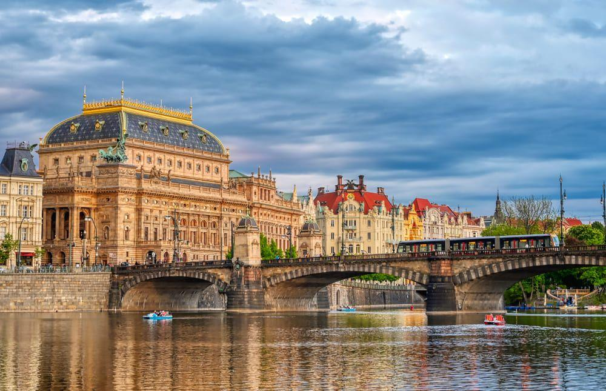
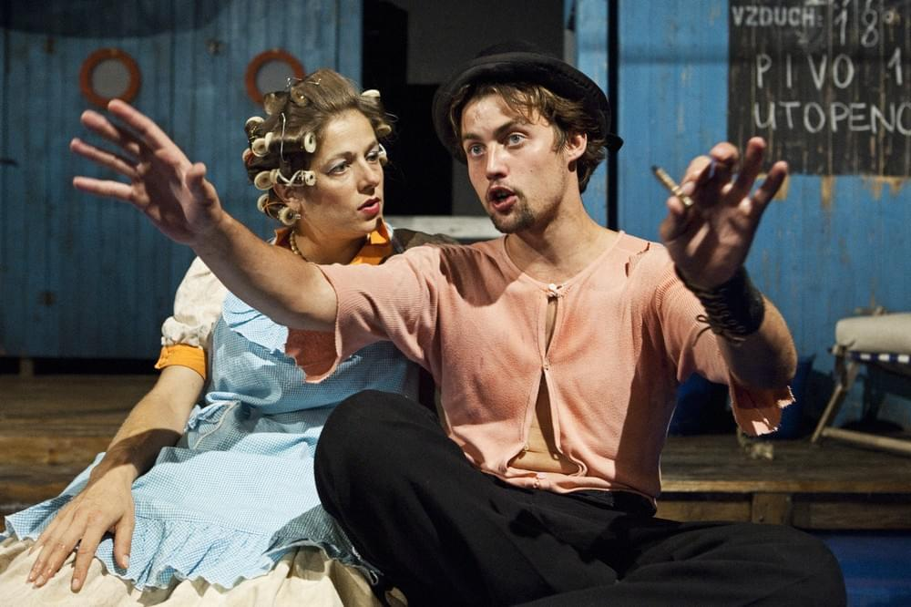
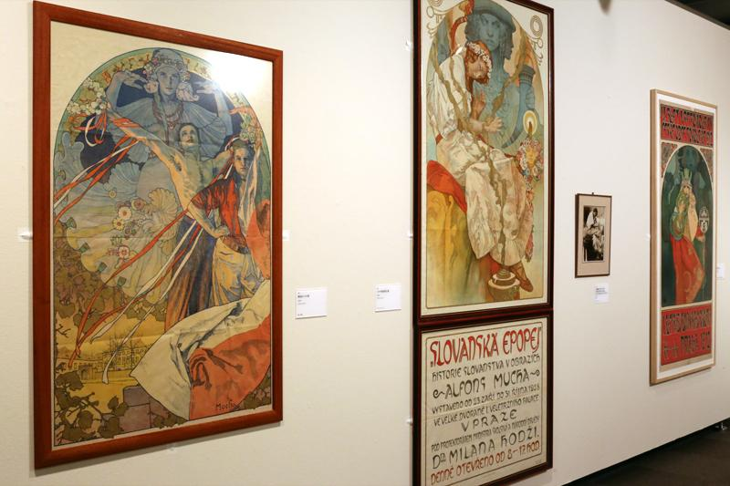
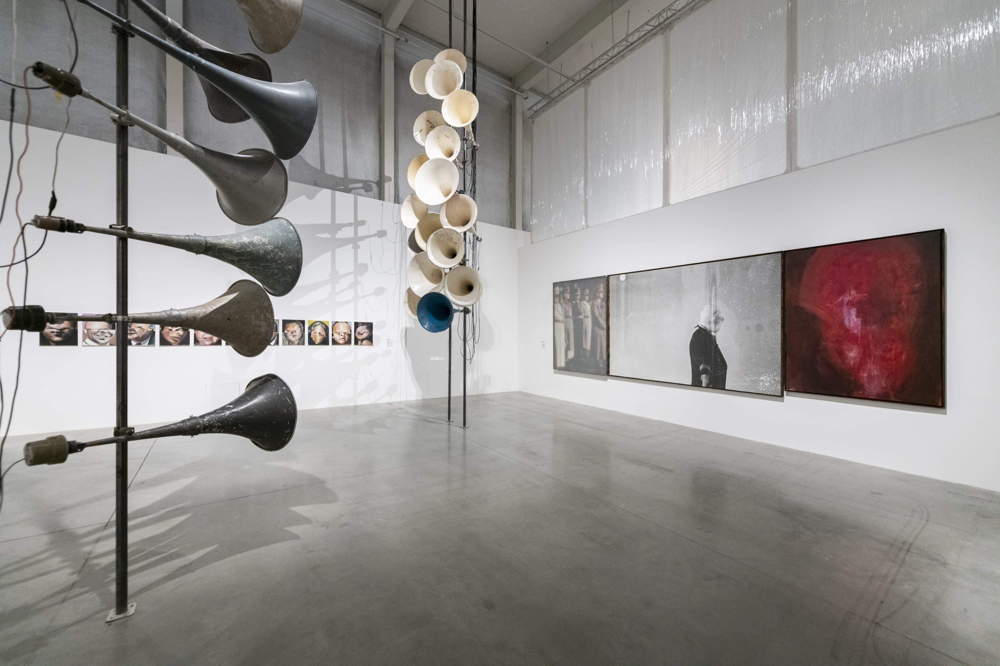
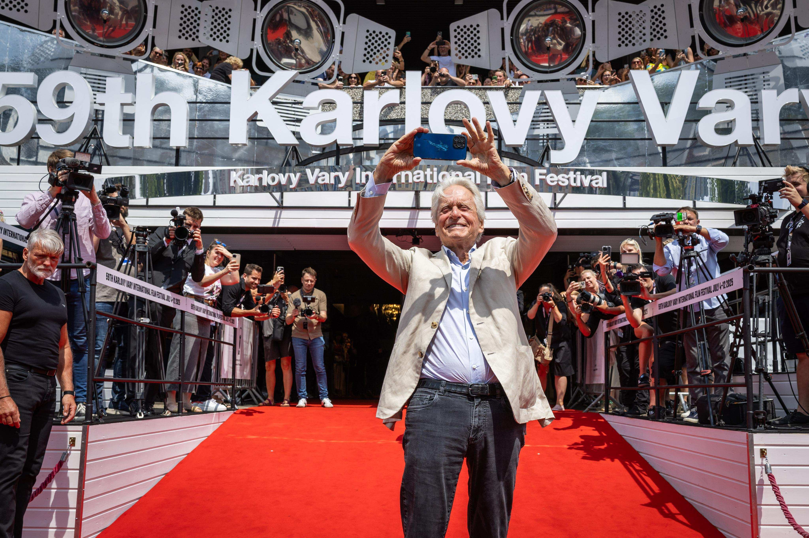
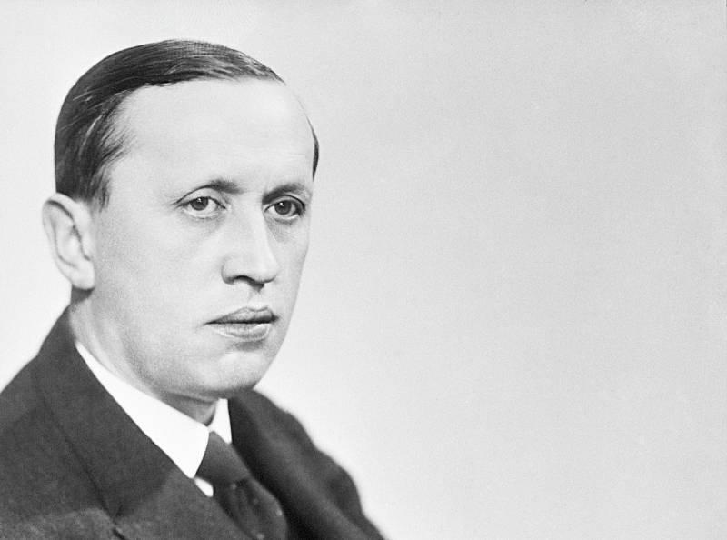

Classical Music
Czechia has a strong classical music tradition. Famous composers such as Antonín Dvořák and Bedřich Smetana created works that are still performed in concert halls around the world.

Explore Czechia's vibrant artistic scene, from classical music and theatre to modern art and design.
Czechia has a rich artistic heritage that continues to inspire people today. From world-famous composers and talented painters to theatres and contemporary artists, creativity has always played an important role in Czech culture.
Discover the artists, composers, perfomances and creative movements that have shaped Czech culture.

Czechia has a strong classical music tradition. Famous composers such as Antonín Dvořák and Bedřich Smetana created works that are still performed in concert halls around the world.

Theatre has a long tradition in Czech culture. From classical plays to modern performances, Czech theatres bring stories to life and provide a space for creativity and artistic expression.

Czech artists have made important contributions to European art. Painters such as Alfons Mucha became internationally famous for their distinctive styles and remarkable works.

Contemporary Czech artists explore new ideas through painting, sculpture, photography and digital media. Galleries and exhibitions across the country showcase both emerging and established creative talents.

Czech cinema is known for its creativity and distinctive storytelling. Czech filmmakers have received international recognition, and the country has a strong film tradition, including the famous Karlovy Vary International Film Festival.

Czech literature has a rich history of influential writers and poets. Authors such as Franz Kafka, Karel Čapek and Milan Kundera have introduced Czech stories and ideas to readers around the world.
Czech arts, music and theatre continue to inspire audiences both at home and around the world. By supporting artists, preserving cultural heritage and exploring new creative ideas, Czechia keeps its artistic traditions alive for future generations.